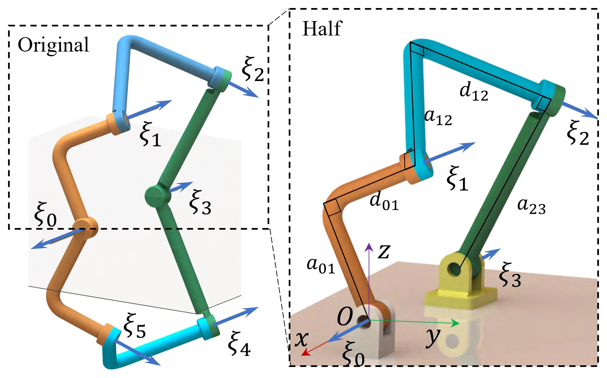
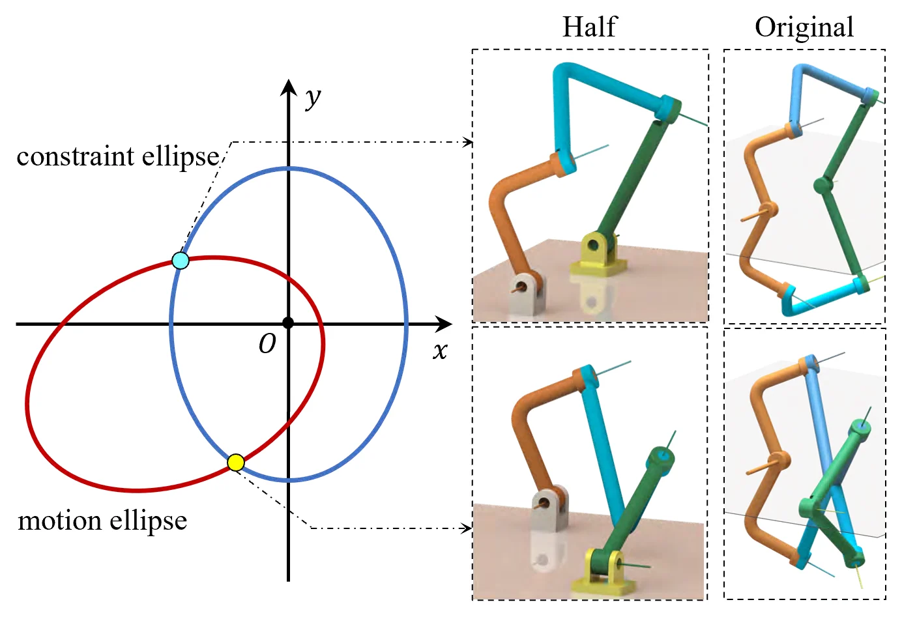
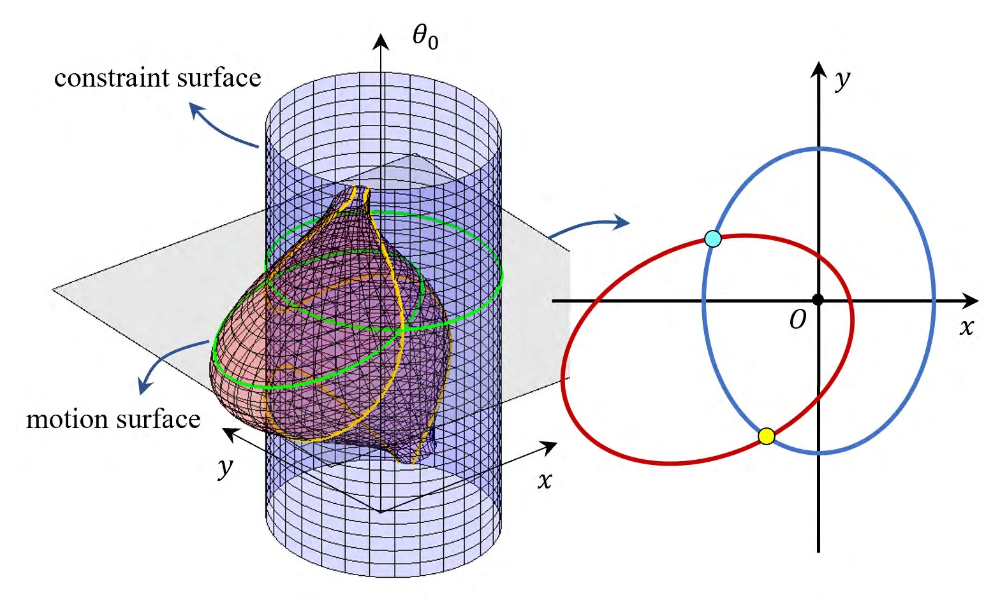
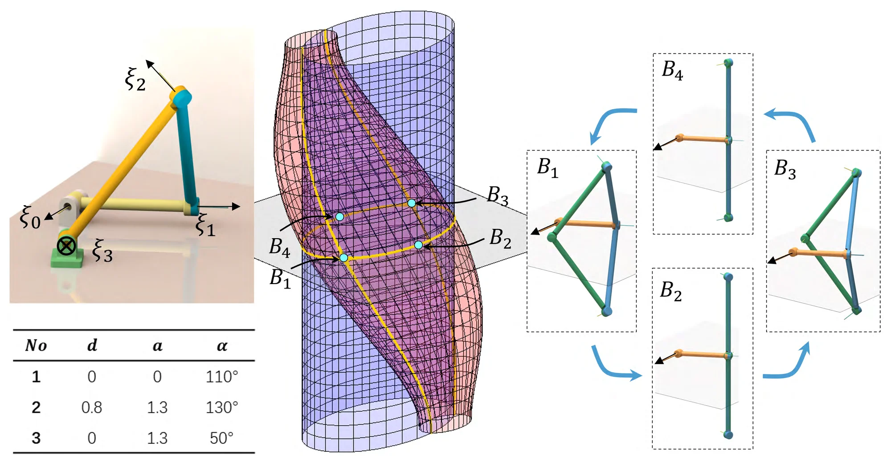
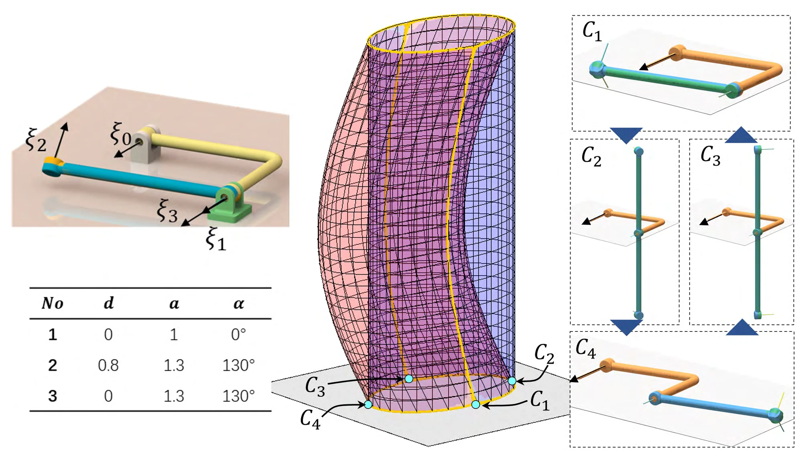
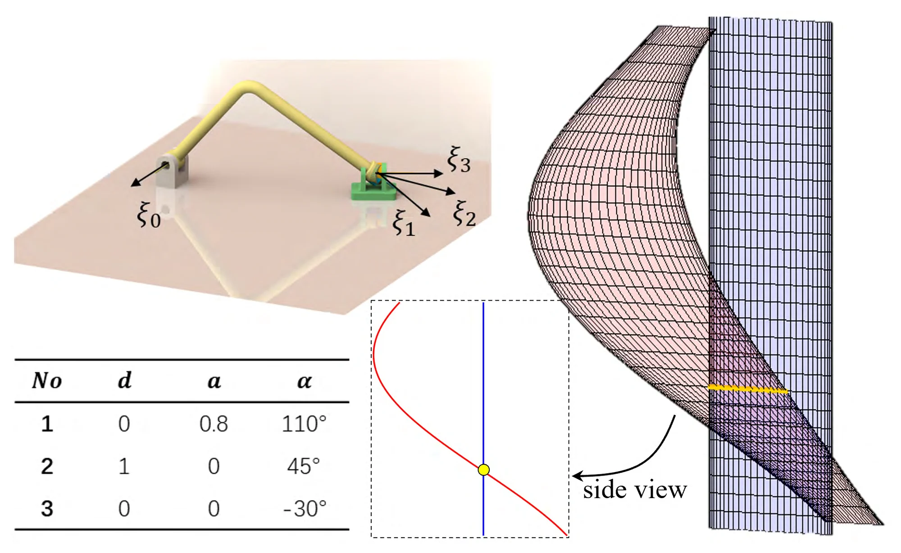
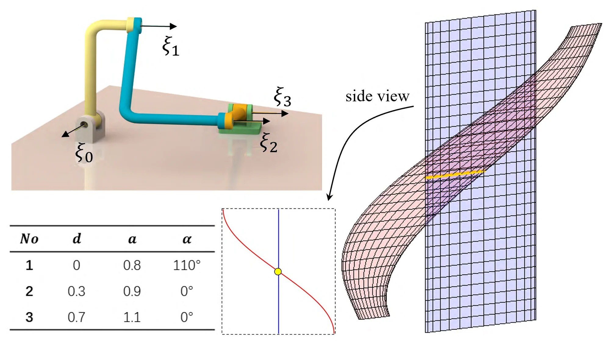
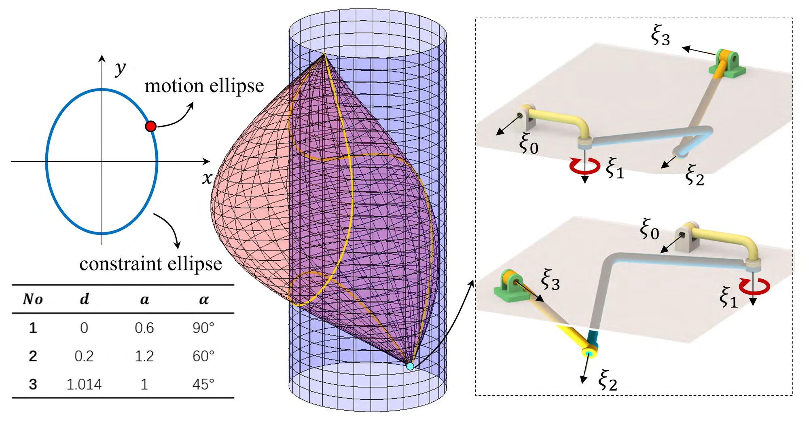

The idea
Where two ellipses overlap,
the mechanism bifurcates.
A plane-symmetric Bricard mechanism has a bifurcation where it can still move while its input joint is held fixed. Split about its symmetry plane, the mechanism's configurations for one input are the intersection points of two coplanar ellipses, so a bifurcation is where the two ellipses meet in infinitely many points.
The ellipses can coincide; flattened into segments, they can overlap; or one can shrink to a point that lies on the other. Going through every such case, the paper gives the conditions on the mechanism's geometric parameters for each, sorts the bifurcations into six cases, and shows an example of each, in which the mechanism bifurcates into a Myard 5R linkage, a Bennett 4R linkage, a spherical or a planar 5R linkage, or a single revolute joint.
01 / Why bifurcations
Why bifurcations
matter.
Why find where a Bricard mechanism bifurcates?
Bricard mechanisms, first described and classified by Bricard in the 1890s, are single loops of six revolute joints. By the Grübler–Kutzbach formula such a loop should not move, yet thanks to their symmetry these overconstrained 6R mechanisms do. Plane-symmetric ones are studied for deployable structures, underwater graspers and compliant mechanisms, and many have been designed with special properties, for example deploying from a compact bundle to a planar configuration.
Their symmetry also makes complicated bifurcations possible. Where the mechanism is used with one degree of freedom, as in a deployable structure, a bifurcation is to be avoided; in a reconfigurable mechanism it may be valuable.
Existing studies analysed particular mechanisms one at a time. Others explained reconfiguration in general: by intersecting toroids that represent the motion of adjacent joints, or, for the general plane-symmetric Bricard mechanism, by solving Denavit–Hartenberg (DH) matrix equations. Both need rather complicated calculation, and some of the conditions on the parameters stay unclear. This paper sets out to find plane-symmetric Bricard mechanisms with bifurcations, to explain each bifurcation visually, and to give the conditions on the geometric parameters in detail.
02 / Geometric approach
Two ellipses
for each input angle.
How do two ellipses give the mechanism's configurations?
Split about its symmetry plane, the plane-symmetric Bricard mechanism gives the half Bricard linkage: a spatial RRRRE linkage with four revolute joints, ξ0 to ξ3, and a planar joint, and with one degree of freedom. Its geometry is given by DH parameters: link lengths a, offsets d, twists α and joint angles θ.

For a given angle θ0 of the input joint ξ0, two coplanar ellipses, built from the poses of the intermediate joint axes, represent the rotations of the joints: the constraint ellipse, set by the length a23 and the twist α23 of the last link, and the motion ellipse, set by the other links and by θ0. Each point where they intersect is one set of joint angles, and so one configuration of the half Bricard linkage; mirroring it gives the configuration of the whole mechanism. Finding the configurations comes down to intersecting two ellipses, a problem with a complete solution.
As θ0 changes, the motion ellipse changes with it, while the constraint ellipse stays the same. Stacked along θ0, the ellipses form two surfaces, the constraint surface and the motion surface, and each layer holds the two ellipses for one input. The curves where the surfaces intersect show how the mechanism moves: its continuous branches of motion and its dead-center configurations.




The two ellipses' equations
Constraint ellipse, Eq. (1):
x2 / a232 + y2 / sin2 α23 = 1
Motion ellipse, Eq. (2):
(x − d12y − h1)2 / (a12 cos δ)2 + (y − cos α12 sin δ)2 / (sin α12 cos δ)2 = 1
where h1 = −sin θ0 a01 + cos θ0 d01 sin α01 and sin δ = cos θ0 sin α01 are known for a given input.
03 / Degeneration
When the ellipses
degenerate.
What happens when adjacent joint axes intersect or are parallel?
Every intersection point is a configuration for the given input. So if a plane-symmetric Bricard mechanism can still move with its input fixed, which means it has a bifurcation, its two ellipses for that input must share a continuous set of points.
In special geometries the ellipses degenerate. When two adjacent joint axes of the half Bricard linkage intersect or are parallel, a denominator in an ellipse's equation becomes zero and that ellipse flattens into a segment; when both of its denominators do, it shrinks to a point. Continuous intersections of these shapes count too.
| Shape | Parameter | Joint axes | Constraint ellipse | Motion ellipse |
|---|---|---|---|---|
| Segment | a23 = 0 | ξ2, ξ3 intersect | x = 0 | — |
| sin α23 = 0 | ξ2, ξ3 parallel | y = 0 | — | |
| a12 = 0 | ξ1, ξ2 intersect | — | x − d12y − h1 = 0 | |
| sin α12 = 0 | ξ1, ξ2 parallel | — | y = cos α12 sin δ | |
| Point | a23 = sin α23 = 0 | ξ2, ξ3 collinear | (0, 0) | — |
| a12 = sin α12 = 0 | ξ1, ξ2 collinear | — | (d12 cos α12 sin δ + h1, cos α12 sin δ) | |
| cos δ = 0 | ξ1 ⊥ symmetry plane |
Two of the point cases, with ξ2 and ξ3 or ξ1 and ξ2 collinear, make one of the two axes redundant: the whole mechanism is then no longer a 6R mechanism, so they are left out. The third, cos δ = 0, means that ξ1 is perpendicular to the symmetry plane, which happens only at one particular input during the motion.
Table II lists the shapes that can intersect continuously. Two ellipses can share infinitely many points only by coinciding, and an ellipse and a segment never can. Two segments can when they are collinear and overlap, which is a partial rotation of ξ1. A point on an ellipse or on a segment also counts: a point is an ellipse with both axes zero, and it contains a full turn of ξ1.
| Motion ellipse | |||
|---|---|---|---|
| Constraint ellipse | Ellipse | Segment | Point |
| Ellipse | Coincide | — | On |
| Segment | — | Collinear | On |
04 / Case studies
Six bifurcations,
one example each.
What does each kind of continuous intersection turn the mechanism into?
For each kind of continuous intersection, the paper derives the conditions on the DH parameters and builds an example mechanism that meets them. Each figure shows the example with its DH parameters, and its constraint surface (blue) and motion surface (pink) with the layer where the bifurcation happens.
With ξ1 perpendicular to ξ2 (α12 = π/2 or 3π/2), d12 = 0 and a12 sin α23 = ±a23, the two ellipses can coincide. With the input joint ξ0 held fixed, the rest of the mechanism then moves as a Myard 5R linkage, a symmetric single-loop 5R linkage; a further condition on the parameters makes sure the whole mechanism can be assembled. In the example, the ellipses meet in two points on most layers, two configurations for the same input, but at θ0 = 37.59° they coincide completely. On that layer the input joint ξ0 can move only in configurations A1 and A3: the other points have no connected intersection points on the layers above or below.


When the ellipses coincide with δ = 0 or π, ξ1 lies on the symmetry plane and coincides with its mirror image ξ5. Then a12 = a23 and α12 = ±α23 + kπ, and either a01 = 0 or α01 = 0 or π allows ξ1 to lie on the plane. With α12 = −α23 + kπ, as in the example, the last four links form a symmetric Bennett linkage. Going round the coinciding ellipses, it lies in a straight line at B2 and B4, and the input joint can move only at B1 and B3.


With α12 = α23 + kπ instead, the last two links of the half Bricard linkage overlap. When the two ellipses coincide, ξ1 and ξ3 are collinear, and the mechanism reduces to a single revolute joint.


Both ellipses can flatten into segments on x = 0 (d12 = a12 = a23 = 0 and h1 = 0); a further inequality makes the segments overlap, so that the mechanism can be assembled. ξ1, ξ2 and ξ3 then meet in one point and, with the revolute axis of the planar joint, form a spherical 4R linkage; mirrored, the whole mechanism is a spherical 5R linkage of ξ1 to ξ5. In most cases this happens on one layer only, and the mechanism can be assembled only at that fixed input, so its mobility can hardly be called a bifurcation. The input joint can move only if ξ0 also passes through the common point: the half Bricard linkage is then a spherical 5R linkage, and the whole a spherical 6R linkage.


When both ellipses flatten into segments on y = 0 (α12 and α23 equal to 0 or π, and sin δ = 0, in most cases only at θ0 = π/2), the segments overlap if a01 < a12 + a23. ξ1, ξ2 and ξ3 are then parallel and, with the planar joint, form a planar RRRP linkage with one degree of freedom; the whole mechanism becomes a planar 5R linkage, ξ1 to ξ5 all parallel. Again, ξ0 cannot move in most cases. It can move only if it is parallel to the other axes too, which makes the half Bricard linkage a planar RRRRP linkage and the whole a planar 6R linkage.


With α01 = π/2 or 3π/2, the motion ellipse shrinks to a point at the input where ξ1 is perpendicular to the symmetry plane. If that point lies on the constraint ellipse, ξ1 can make a full turn while ξ2 and ξ3 keep their relative pose. ξ1 and its mirror image ξ5 are collinear, so the distal part of the mechanism rotates about them as about a revolute joint. As with coinciding ellipses, the mechanism can move on along the two intersection curves of the surfaces only from the two configurations shown. A point on a segment behaves almost the same, except that more than two configurations may let the input joint move.
05 / Classification
Classification
of the bifurcations.
Which axis features lead to which mechanism type, and what about asymmetric motion?
Table III gathers the six cases: the kind of continuous intersection, the feature of the joint axes it requires, and what the plane-symmetric Bricard mechanism bifurcates into.
| Continuous intersection | Axis feature | Mechanism type |
|---|---|---|
| Ellipses coincide | ξ1 ⊥ ξ2 | Myard 5R |
| ξ1 in the symmetry plane | Bennett 4R | |
| ξ1 in the symmetry plane | Revolute joint | |
| Segments collinear | ξ1 to ξ5 through one point | Spherical 5R |
| ξ1 to ξ5 parallel | Planar 5R | |
| Point on an ellipse or a segment | ξ1 ⊥ symmetry plane | Revolute joint |
These conditions come from the half Bricard linkage, so they describe bifurcations in which the mirrored whole mechanism moves symmetrically. The whole mechanism may also be able to move asymmetrically, so the conditions suit a plane-symmetric bifurcation but are stricter than a general bifurcation needs. When the ellipses coincide with ξ1 on the symmetry plane, for example, the distal part of the mechanism can rotate about the coincident ξ1 and ξ5, an asymmetric configuration in which ξ2 and ξ3 keep their relative pose; and spherical and planar 5R linkages have two degrees of freedom, so their configurations need not be symmetric.
Table IV gives simpler conditions under which the mechanism bifurcates from symmetric configurations into asymmetric ones. Each is part of one of the cases above, and so is its axis feature. At such a configuration the mechanism can move with its input fixed, but asymmetrically.
| Parameter conditions | Axis feature | Mechanism type |
|---|---|---|
| a01 = 0 or α01 = 0, π | ξ1, ξ5 in the symmetry plane | Revolute joint |
| a12 = 0 | ξ1, ξ2, ξ4, ξ5 through one point | Spherical 4R |
| α12 = 0, π | ξ1, ξ2, ξ4, ξ5 parallel | Planar 4R |
Questions & answers
Common questions.
What is a bifurcation here?
A configuration where the plane-symmetric Bricard mechanism can still move while its input joint is held fixed. A mechanism that should move with one degree of freedom, like a deployable structure, has to avoid it; for a reconfigurable mechanism it may be valuable.
Why look for continuous intersections?
Each intersection point of the two ellipses is one configuration for the given input. If the mechanism can move with its input fixed, it passes through infinitely many configurations on that one layer, so the two shapes must share infinitely many points: they coincide, they overlap as segments, or one is a point on the other.
Why do segments and points count?
When adjacent joint axes intersect or are parallel, an ellipse flattens into a segment, and when ξ1 is perpendicular to the symmetry plane the motion ellipse shrinks to a point. Two segments can overlap partly, a partial rotation of ξ1; a point is an ellipse with both axes zero and contains a full turn of ξ1.
Are the spherical and planar cases true bifurcations?
In most cases the segments overlap on one layer only, and the mechanism can be assembled only at that fixed input, so its mobility can hardly be called a bifurcation. The input joint can move only if ξ0 also passes through the common point of the other axes, or is parallel to them, which makes the whole mechanism a spherical or a planar 6R linkage.
What do the asymmetric cases add?
The analysis uses the half Bricard linkage, so it finds bifurcations into symmetric motion, and its conditions are stricter than a general bifurcation needs. Table IV adds simpler conditions under which the mechanism, at the bifurcation, moves with its input fixed but asymmetrically: as a revolute joint, a spherical 4R linkage or a planar 4R linkage.
Paper & authors
Bifurcations
from two ellipses.
A Geometric Approach for the Bifurcation Modeling and Analysis of Plane-Symmetric Bricard Mechanisms
Yuliang Lu, Siyue Yao, Yanjun Wang, Hao Wang, and Genliang Chen.
2024 6th International Conference on Reconfigurable Mechanisms and Robots (ReMAR), pp. 180–185, 2024.
Citation / BibTeX
@inproceedings{lu2024bifurcation,
title = {A Geometric Approach for the Bifurcation Modeling and Analysis of Plane-Symmetric Bricard Mechanisms},
author = {Lu, Yuliang and Yao, Siyue and Wang, Yanjun and Wang, Hao and Chen, Genliang},
booktitle = {2024 6th International Conference on Reconfigurable Mechanisms and Robots (ReMAR)},
pages = {180--185},
year = {2024},
publisher = {IEEE},
doi = {10.1109/ReMAR61031.2024.10617685}
}Full affiliations
- Shanghai Key Laboratory of Digital Manufacturing for Thin-Walled Structures, and the Meta Robotics Institute, Shanghai Jiao Tong University (SJTU), Shanghai, 200240, P.R. China
- Institute of Marine Equipment, SJTU, Shanghai, 200240, P.R. China
- State Key Laboratory of Mechanical Systems and Vibration, and the Meta Robotics Institute, SJTU, Shanghai, 200240, P.R. China
* Corresponding author: Genliang Chen